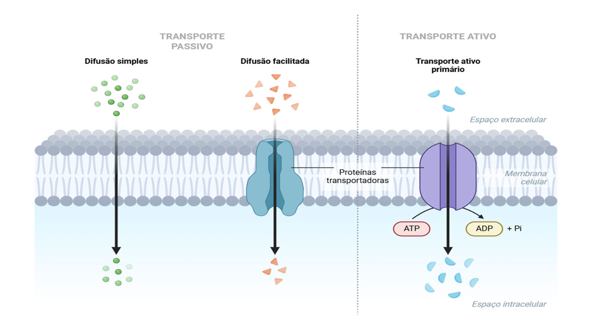
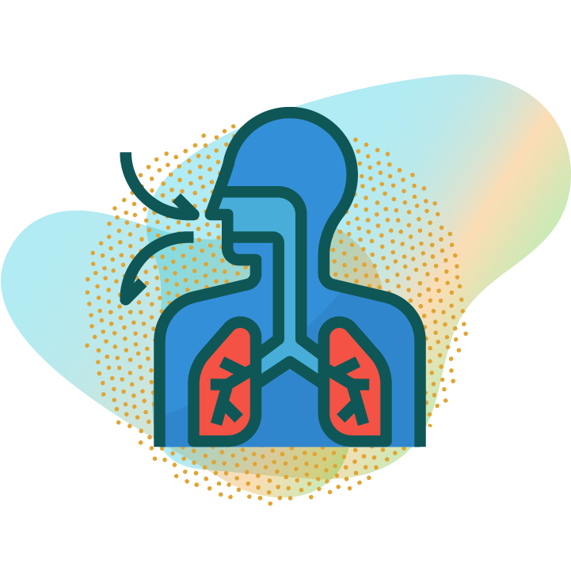
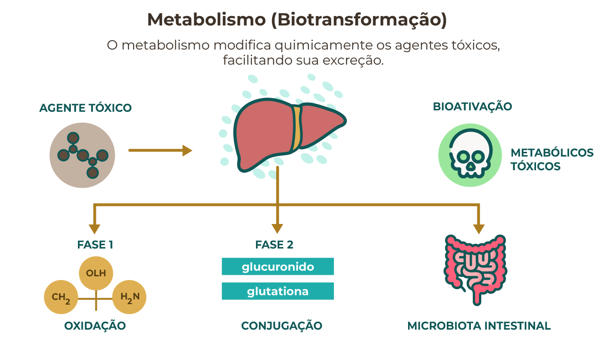
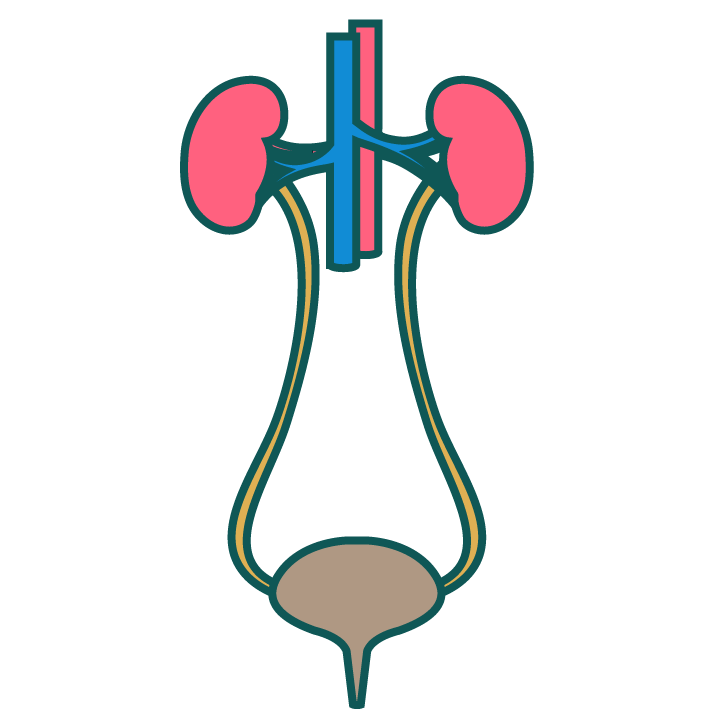
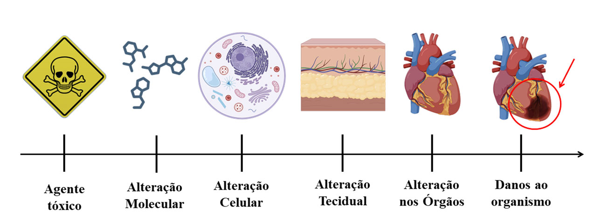

MÓDULO 2 | AULA 2 Fundamentos da Toxicocinética e toxicodinâmica dos agentes tóxicos e sua relação com a epidemiologia
Conceitos Fundamentais
Toxicocinética: O destino do agente tóxico no organismo
A toxicocinética é o ramo da toxicologia que estuda o movimento dos agentes tóxicos no organismo, desde o momento da exposição até a sua eliminação. Este processo é classicamente dividido em quatro fases principais, frequentemente resumidas pelo acrônimo ADME:
No entanto, antes de abordarmos essas fases, é importante compreender os dois mecanismos principais que permitem aos agentes tóxicos atravessarem a membrana celular: o transporte passivo e o transporte ativo (Figura 1).
- Transporte Passivo: ocorre sem gasto energético por parte da célula. O agente tóxico atravessa a membrana celular seguindo o gradiente de concentração, isto é, de uma região de maior para uma de menor concentração. Esse movimento pode acontecer por difusão simples, fluxo de massa ou troca iônica, sendo geralmente rápido e reversível, de modo que a substância pode entrar e sair livremente do espaço extracelular e intracelular.
- Transporte Ativo: exige gasto energético da célula, pois o agente tóxico é transportado contra o gradiente químico. Nesse caso, o soluto atravessa a barreira lipídica da membrana para atingir o citoplasma. Esse processo tende a ser mais lento e, ao contrário do passivo, é irreversível, garantindo a internalização do xenobiótico.

- Para entender melhor as quatro fases da toxicocinética e como os agentes tóxicos atravessam a membrana celular, assista ao vídeo: Membrana Plasmática e Tipos de Transporte Celular. Ele ilustra de forma prática os processos que determinam a concentração e a duração dos xenobióticos nos tecidos do organismo.
Absorção
A absorção se refere à passagem de um agente tóxico do local de exposição para a corrente sanguínea. Esse mecanismo é essencial para a distribuição de substâncias no corpo e suas principais vias incluem a:
Gastrointestinal
(ingestão)

Respiratória
(inalação)
Dérmica
(contato com a pele)
Além disso, as vias de administração parenteral envolvem todas as outras rotas — como intravenosa, intraperitoneal, intramuscular, subcutânea, entre outras — que contornam o sistema digestivo, permitindo uma absorção direta e mais eficiente.
A eficiência da absorção depende de diversos fatores, como as propriedades físico-químicas do agente (solubilidade, tamanho molecular, lipofilicidade), a integridade das barreiras biológicas (pele, mucosas), a concentração do agente no local de exposição e a duração da exposição. Por exemplo, metais tóxicos como o chumbo podem ser absorvidos por todas as vias, mas a absorção gastrointestinal é particularmente relevante em crianças devido à maior permeabilidade intestinal.
- Assista ao vídeo “Como acontece a absorção de medicamentos pelo corpo” e aprofunde seu entendimento sobre como as substâncias químicas entram no organismo por diferentes vias — gastrointestinal, respiratória, dérmica e parenteral. O vídeo explica ainda os fatores que influenciam a eficiência da absorção, como solubilidade, tamanho molecular, lipofilicidade e integridade das barreiras biológicas.
Distribuição
Depois de absorvido, o agente tóxico é levado pela corrente sanguínea para diferentes tecidos e órgãos. Essa distribuição depende, principalmente, do fluxo sanguíneo e da afinidade da substância por determinados tecidos.
Exemplo
O chumbo é um metal tóxico que pode se acumular nos ossos e permanecer no organismo por muitos anos, sendo liberado lentamente na corrente sanguínea mesmo após o fim da exposição.
Essa dinâmica é descrita pelo volume de distribuição (Vd), que indica como a substância se dispersa pelos compartimentos do corpo. Em alguns casos, o tóxico se deposita em tecidos pouco vascularizados. Isso pode reduzir, temporariamente, sua concentração no sangue e nos órgãos-alvo, funcionando como uma “proteção”. No entanto, esses depósitos podem liberar a substância de volta à circulação, prolongando seus efeitos tóxicos.
Outro fator importante é a ligação às proteínas plasmáticas, como a albumina, as lipoproteínas e as globulinas. Quando se ligam a essas proteínas, os xenobióticos têm sua fração livre (biodisponível) reduzida, o que limita a passagem para os tecidos. Apenas a fração livre é biologicamente ativa e responsável pelos efeitos tóxicos. Esse processo é reversível: existe sempre um equilíbrio entre a forma ligada e a livre. Em doenças hepáticas, que reduzem a produção de proteínas plasmáticas, esse mecanismo fica prejudicado, aumentando o risco de acúmulo tóxico.
Além disso, alguns tecidos funcionam como compartimentos de armazenamento. O fígado, os rins, o tecido adiposo e os ossos são os principais. Substâncias lipofílicas (solúveis em gordura) tendem a se acumular no tecido adiposo. Isso pode reduzir temporariamente sua ação tóxica, mas situações de mobilização rápida de gordura — como em emagrecimento intenso — podem liberar essas substâncias na circulação, elevando a toxicidade. Os ossos também atuam como um compartimento dinâmico, armazenando e liberando substâncias como o chumbo.
Por fim, a distribuição dos tóxicos é modulada por barreiras biológicas. A barreira hematoencefálica (BHE) protege o sistema nervoso central por meio de junções firmes entre células e de transportadores ativos que expulsam substâncias. Substâncias lipossolúveis passam com mais facilidade, enquanto moléculas ionizadas encontram maior dificuldade. Já a placenta é menos seletiva: apesar de possuir transportadores e enzimas de biotransformação, permite a passagem de vários compostos lipofílicos, além de vírus e patógenos. Por isso, não impede totalmente a exposição do feto, tornando o período de desenvolvimento embriofetal mais vulnerável à toxicidade.
Metabolismo (Biotransformação)
A biotransformação dos xenobióticos é um processo fundamental para a desintoxicação do organismo, e ocorre principalmente no fígado, embora outras partes do corpo também participem, como os rins, pulmões e até mesmo a pele. Esse processo pode transformar substâncias lipofílicas, que são mais difíceis de eliminar, em compostos hidrossolúveis, facilitando sua excreção (Figura 2) através da urina ou fezes.

A biotransformação divide-se em duas fases principais:
Fase 1
A substância sofre oxidação, redução ou hidrólise, expondo ou introduzindo grupos funcionais como -OH, -NH₂ e -COOH. Isso aumenta parcialmente a hidrossolubilidade, mas nem sempre o suficiente para excreção direta. Além disso, as reações são catalisadas por enzimas, destacando-se o sistema citocromo P450 (CYP). Nesta fase, o metabolismo pode inativar o agente tóxico, formar metabólitos menos tóxicos ou, em alguns casos, gerar metabólitos mais tóxicos — como ocorre com certos hidrocarbonetos policíclicos aromáticos (HPAs), convertidos em epóxidos carcinogênicos, processo conhecido como bioativação.
Fase 2
O xenobiótico ou seu metabólito da fase 1 é conjugado com grupos como ácido glucurônico, sulfato ou glutationa, aumentando significativamente a solubilidade em água e facilitando a eliminação por urina, fezes ou bile. Essas reações também diminuem os efeitos tóxicos, embora em alguns casos produzam metabólitos ativos e potencialmente mais tóxicos.
A atividade enzimática varia entre indivíduos devido a fatores genéticos, ambientais e interações com outras substâncias, influenciando tanto a eficácia quanto a toxicidade. Essa variabilidade é estudada pela farmacogenética.
Além disso, a microbiota intestinal pode metabolizar parcialmente certos xenobióticos antes do processamento hepático, convertendo-os em formas mais ou menos ativas e influenciando diretamente seus efeitos no organismo.
A farmacogenética analisa como um único gene pode influenciar a resposta de uma pessoa a um medicamento específico. Já a farmacogenômica amplia essa visão, estudando diversos genes e suas interações. Essa distinção é essencial para compreender por que algumas pessoas têm reações adversas ou não respondem a certos tratamentos, possibilitando o avanço de terapias mais personalizadas e seguras.
- Assista ao vídeo “Farmacocinética – Biotransformação” e conheça, de forma simples e didática, os principais conceitos sobre a etapa de biotransformação de fármacos.
Excreção
A excreção é o processo vital pelo qual o organismo remove agentes tóxicos e seus metabólitos. A principal via de eliminação é a renal (urina), mas também existem outras rotas: a biliar (fezes), a pulmonar (ar exalado, para substâncias voláteis) e, em menor escala, o suor, a saliva e o leite materno. A escolha da via depende das características da substância, como sua solubilidade e a interação com os mecanismos metabólicos do corpo.
A urina é a forma mais importante de eliminação. Nos rins, íons e pequenas moléculas passam do sangue para os túbulos renais por meio da filtração glomerular. Já substâncias lipofílicas, pouco solúveis em água, precisam ser biotransformadas para se tornarem mais hidrossolúveis e, assim, serem excretadas.
A imagem apresenta o rim, o ureter e a bexiga — principais componentes do sistema urinário envolvidos na filtração do sangue, formação da urina e transporte até a eliminação final pelo organismo. O rim realiza a filtração do sangue e as modificações necessárias para a excreção das substâncias. O ureter transporta a urina formada para a bexiga, onde ela é armazenada até ser eliminada durante a micção.

O pH da urina também influencia esse processo: compostos ácidos são eliminados mais facilmente em urina alcalina, enquanto compostos básicos são excretados melhor em urina ácida.
Além da filtração, ocorrem outros dois processos:
- Reabsorção tubular: algumas substâncias filtradas retornam à corrente sanguínea, diminuindo sua excreção.
- Secreção tubular: substâncias que não foram filtradas inicialmente podem ser ativamente transportadas para os túbulos e eliminadas.
A eficiência da excreção renal depende, portanto, do equilíbrio entre filtração, reabsorção e secreção. Substâncias pouco metabolizadas ou muito ligadas às proteínas plasmáticas tendem a ser eliminadas lentamente, o que prolonga sua permanência no corpo.
Exemplo
O mercúrio, especialmente em sua forma orgânica (metilmercúrio), possui excreção lenta e tende a se acumular em tecidos como o cérebro.
No sistema digestivo, muitos xenobióticos e seus metabólitos são eliminados nas fezes. O fígado metaboliza essas substâncias e as envia para a bile, que as libera no intestino.
Em alguns casos, ocorre a reabsorção intestinal, fenômeno conhecido como ciclo entero-hepático. Observe a figura 3 abaixo:
pan_tool_alt CliqueToque nos números e veja o que ocorre em cada etapa do ciclo
Figura 3: Ciclo entero-hepático. Fonte: Campus virtual Fiocruz, a partir de Lecturio, 2025Um bom exemplo é pensar no fígado como uma fábrica: ele envia produtos para entrega (pela bile), mas parte dessas entregas retorna à fábrica, é reciclada e enviada novamente. Esse processo prolonga a permanência da substância no corpo, influenciando a duração do efeito de certos medicamentos ou toxinas.
A excreção pulmonar é importante para substâncias voláteis ou gasosas, como solventes orgânicos. Nesse caso, a eliminação é mais rápida para compostos com baixa solubilidade no sangue.
Além disso, o corpo também elimina toxinas em pequenas quantidades pelo suor, saliva, lágrimas e leite materno. Essas vias têm importância clínica, especialmente para substâncias lipossolúveis que podem ser transferidas, por exemplo, da mãe para o bebê durante a amamentação.
A excreção é a etapa final da toxicocinética, que integra absorção, distribuição, biotransformação e excreção (ADME). Compreender esse processo permite prever a intensidade e a duração dos efeitos de uma substância no organismo.
Essa visão integrada é fundamental para a avaliação de risco, o manejo de intoxicações e o desenvolvimento de estratégias de proteção à saúde.
- Para entender melhor sobre a toxicocinética assista ao vídeo “Farmacocinética - da Absorção à Excreção” que esquematiza de forma didática todo o processo de interação de substâncias exógenas com o organismo, desde a absorção até a excreção.
Toxicodinâmica: Os Efeitos do Agente Tóxico no Organismo
A toxicodinâmica estuda os mecanismos pelos quais os agentes tóxicos exercem seus efeitos adversos nos sistemas biológicos. Ela se concentra nas interações entre o agente tóxico (ou seus metabólitos) e os alvos moleculares, celulares e teciduais, resultando em uma resposta biológica que pode variar de alterações bioquímicas sutis a danos orgânicos graves e morte (Figura 4). A compreensão da toxicodinâmica é crucial para identificar os biomarcadores de exposição e efeito, desenvolver terapias e antídotos, e estabelecer limites de exposição seguros.

Mecanismos de Ação
Os agentes tóxicos podem agir de diferentes formas no organismo, dependendo de suas propriedades químicas e dos alvos biológicos que atingem. Abaixo estão alguns dos principais mecanismos de ação:
Interação com receptores específicos:
Muitos agentes tóxicos conseguem imitar ou bloquear substâncias endógenas, ligando-se a receptores do organismo.
Exemplo
O chumbo (Pb²⁺) pode mimetizar o cálcio (Ca²⁺) e interagir com proteínas intracelulares, como a calmodulina. Isso compromete a sinalização celular dependente de cálcio, levando a disfunções neurológicas e metabólicas.
Alterações em membranas excitáveis:
As membranas excitáveis estão presentes em neurônios, fibras musculares e células cardíacas. Elas são essenciais para transmitir impulsos elétricos e permitir a contração muscular. Seu funcionamento depende do equilíbrio entre os canais de sódio e potássio.
Exemplos de toxinas que afetam esses canais:
- Tetrodotoxina: bloqueia canais de sódio → impede a liberação de acetilcolina.
- Batracotoxina: aumenta a permeabilidade ao sódio → causa despolarização contínua.
- Toxina botulínica: bloqueia a liberação de acetilcolina → provoca paralisia.
- Venenos de Naja: inibem receptores pós-sinápticos da acetilcolina → também causam paralisia.
- Apamina e dendrotoxina: interferem nos canais de potássio → comprometem a função celular.
Complexação com biomoléculas:
Outro mecanismo importante é a interação direta com componentes celulares. Nesses casos, o agente tóxico se liga a moléculas essenciais do organismo, alterando sua estrutura e função. Isso pode afetar enzimas, proteínas, lipídios e ácidos nucleicos, comprometendo a homeostase celular e até levando à morte celular.
Exemplos por alvo:
- O cianeto inibe a citocromo c oxidase, causando asfixia celular.
- Metais como chumbo, mercúrio e cobalto bloqueiam enzimas da síntese de heme ou da biotransformação de xenobióticos, retardando a eliminação de tóxicos.
- Metabólitos reativos podem se ligar a proteínas, RNA e DNA → gerando necrose, mutações ou câncer.
- A aflatoxina B1 se liga ao DNA → pode causar câncer hepático.
- O paracetamol em excesso forma a N-acetil-p-benzoquinona (NAPQI), que esgota a glutationa e provoca necrose hepática.
- O cádmio causa estresse oxidativo, danificando proteínas e órgãos como rins e ossos.
- Certas toxinas induzem peroxidação lipídica, danificando membranas celulares e levando a necrose e inflamação.
- Radicais livres e metais como o ferro intensificam esse processo, afetando principalmente fígado e pulmões.
- Algumas toxinas atacam diretamente o DNA e o RNA, modificando a expressão gênica e podendo causar mutações ou câncer.
- O mercúrio, por exemplo, gera espécies reativas de oxigênio que atrapalham a replicação e a transcrição celular.
Em resumo: os agentes tóxicos podem enganar receptores, interferir na condução elétrica das células ou se ligar a moléculas vitais. Em todos os casos, o resultado é a alteração das funções normais do organismo, o que pode levar a doenças graves ou morte celular.
Para aprofundar seus conhecimentos, assista à videoaula "Toxicologia Direto ao Ponto – Toxicodinâmica: Mecanismos de Ação de Toxicantes", que oferece uma análise aprofundada dos processos pelos quais substâncias tóxicas interagem com o organismo, alterando funções celulares e fisiológicas. Ministrada pelo canal Sinapses, a aula aborda tópicos como:
- Interação com receptores celulares: como as toxinas se ligam a estruturas específicas, desencadeando respostas biológicas.
- Alterações enzimáticas: impacto das toxinas na atividade de enzimas essenciais para processos metabólicos.
- Modulação de canais iônicos: efeitos das substâncias na condução de sinais elétricos entre células.
- Dano ao DNA e proteínas: mecanismos pelos quais as toxinas podem causar mutações ou inativar proteínas vitais.
Mutagenicidade é a capacidade de uma substância de alterar o DNA, podendo transmitir essas mudanças às células-filhas. Carcinogenicidade refere-se à capacidade de induzir câncer, geralmente por mutações em genes que controlam o crescimento celular, formando tumores. Necrose é a morte celular patológica causada por danos diretos, levando à perda de integridade, inflamação e lesão tecidual.
Efeitos Biológicos: Agudos vs. Crônicos
Os efeitos biológicos dos agentes tóxicos podem ser classificados de acordo com a duração e a frequência da exposição:
São aqueles que se manifestam rapidamente após uma única exposição ou exposições de curta duração a uma alta concentração do agente tóxico. Geralmente são reversíveis se a exposição for cessada e o organismo tiver capacidade de recuperação. Exemplos incluem náuseas e vômitos após ingestão acidental de um produto químico, ou irritação respiratória por inalação de gases tóxicos.
Resultam de exposições repetidas e prolongadas a baixas concentrações de um agente tóxico, desenvolvendo-se lentamente ao longo do tempo. Esses efeitos são frequentemente irreversíveis e podem incluir doenças crônicas, como câncer, doenças neurológicas, disfunção renal ou hepática. A exposição crônica ao arsênio, por exemplo, pode levar a lesões de pele, neuropatia e aumento do risco de câncer.
É importante destacar que um mesmo agente tóxico pode causar tanto efeitos agudos quanto crônicos, a depender da dose e da duração da exposição. Por esse motivo, a avaliação de risco deve levar em consideração ambos os tipos de efeitos, com o objetivo de garantir a proteção adequada da saúde humana.
- Assista ao vídeo “Metais Pesados” e compreenda como a exposição a substâncias como mercúrio, chumbo e cádmio pode afetar a saúde humana. O vídeo mostra, de forma clara e acessível, os efeitos biológicos agudos e crônicos desses metais, evidenciando desde sintomas imediatos até consequências a longo prazo.